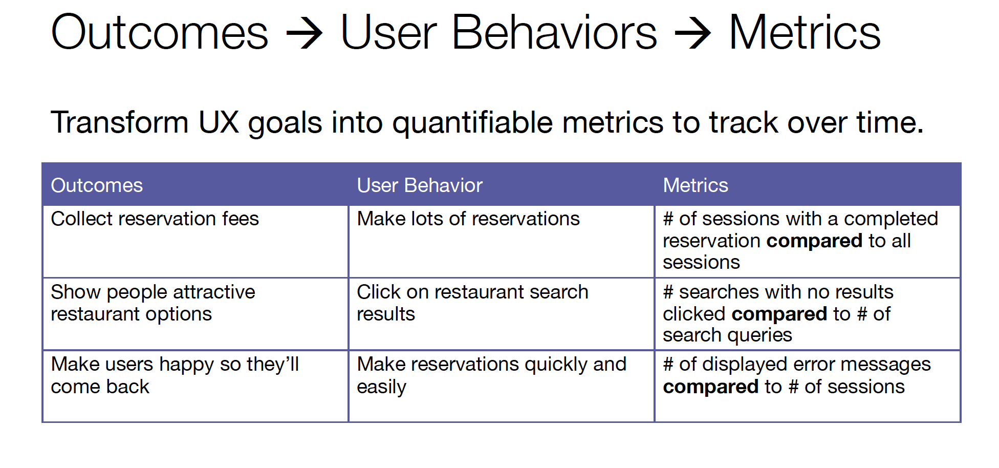

Reduce unnecessary projects, reduce opinion based choices, experiment
Discover opportunities for improvements
Perform user and path analysis
## Start with a question (not metrics!)
Context is needed to make sense of quantitative data
What are the goals of our site?
Measure user behavior that makes up achieving those goals

## Techniques: Segmentation of Personas
What personas do we want to target?
List of actions that persona would perform
Determine whether an action is unique to that persona or common to several types of users
## Techniques: Funnels for sequential paths
A technique to analyze sequential paths
Measure each step in path to conversion
Understand at what step users drop off and abandon tasks
What is a funnel for library users?
Checking out an item? Paying a fine? Reserving a room or laptop?
## Success and Health Metrics
Use success metrics to understand if changes are effective
Content usage, Feature usage, Task success, Navigation speed, Session duration, Session repetition
Use health metrics to make sure nothing is breaking
Support needed from customer service, Usage, Cancellation, Task abandonment, Page load time
When you have a hypothesis, easy to implement design features, unambiguous outcome metrics, a lot of traffic
Slide 5 - Tinu workshop 1
Slide 6 - Tinu workshop 2
We've used qualitative research methods in creation of our UX workspace
Collaboration within UX team for analytics access in the new site - more room for experimentation and optimization
Combine analytics with personas and other research Viget provides